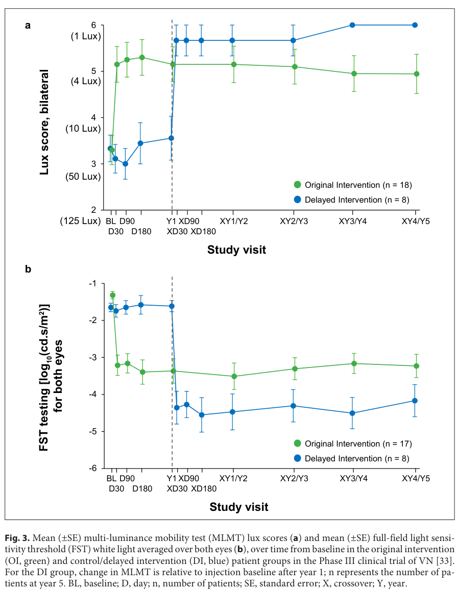

Executive Summary
RPE65-related retinopathy is an inherited retinal degeneration caused predominantly by biallelic pathogenic variants in RPE65, which encodes the retinoid isomerohydrolase required for 11-cis-retinoid regeneration in the visual cycle in retinal pigment epithelium (RPE). Biochemically, loss of RPE65 reduces 11-cis-retinoids and leads to retinyl-ester accumulation, resulting in rod dysfunction (early nyctalopia) and progressive photoreceptor degeneration with severe early-onset visual impairment. Clinically it spans Leber congenital amaurosis (LCA), early-onset severe retinal dystrophy (EOSRD), and early/severe retinitis pigmentosa (RP) phenotypes. The main real-world therapy is voretigene neparvovec (Luxturna®), a subretinal AAV gene-augmentation treatment, which improves light sensitivity and functional vision in selected patients with viable retinal cells, with durability measured to 5 years (Phase III MLMT) and 7.5 years (Phase I FST) in follow-up publications and reviews. (stepanova2023amoleculargenetic pages 1-2, han2023voretigeneneparvovecfor pages 1-2, leroy2023genetherapyfor pages 1-2)
1. Disease Information
1.1 Definition and overview
RPE65-associated retinal dystrophy/retinopathy refers to retinal degenerations caused by RPE65 mutations and presenting clinically as LCA, EOSRD, and early/severe RP. (han2023voretigeneneparvovecfor pages 1-2)
Direct abstract quote (2023 consensus): “Mutations in the RPE65 gene… share common clinical characteristics, such as early-onset severe nyctalopia, nystagmus, low vision, and progressive visual field constriction…” (han2023voretigeneneparvovecfor pages 1-2)
1.2 Key identifiers (available from retrieved evidence)
- MONDO (OpenTargets):
- RPE65-related recessive retinopathy: MONDO:0100368 (OpenTargets Search: RPE65-related retinopathy,Leber congenital amaurosis,retinitis pigmentosa-RPE65)
- RPE65-related dominant retinopathy: MONDO:0100452 (OpenTargets Search: RPE65-related retinopathy,Leber congenital amaurosis,retinitis pigmentosa-RPE65)
- Leber congenital amaurosis: MONDO:0018998 (OpenTargets Search: RPE65-related retinopathy,Leber congenital amaurosis,retinitis pigmentosa-RPE65)
- OMIM (explicitly cited in retrieved text):
- LCA (OMIM 204100) (stepanova2023amoleculargenetic pages 1-2)
- Early-onset RP20 (OMIM 613794) (stepanova2023amoleculargenetic pages 1-2)
Not retrieved in the available excerpts: Orphanet IDs, ICD-10/ICD-11 codes, and MeSH identifiers specific to “RPE65-related retinopathy” (trial excerpts did include MeSH terms for LCA and RP but without stable identifiers in the extracted snippet). (NCT00999609 chunk 2)
1.3 Common synonyms / alternative names (as used in the literature)
- “RPE65-associated retinal dystrophy” (han2023voretigeneneparvovecfor pages 1-2)
- “RPE65-mediated inherited retinal dystrophy” (testa2024voretigeneneparvovecfor pages 1-2, fischer2024realworldsafetyand pages 1-2)
- “RPE65-associated retinopathy/retinopathies” (stepanova2023amoleculargenetic pages 1-2, testa2022rpe65associatedretinopathiesin pages 1-2)
- “LCA2” / “LCA type 2” (RPE65-related LCA subtype) (chiu2021anupdateon pages 5-6)
1.4 Evidence sources: aggregated vs individual
Most information in this report is derived from aggregated disease-level sources: consensus statements and scoping reviews (2023–2024), registry-based post-authorization studies (2024), and multicenter natural history cohorts (2022), rather than EHR-only single-patient sources. (han2023voretigeneneparvovecfor pages 1-2, testa2024voretigeneneparvovecfor pages 1-2, fischer2024realworldsafetyand pages 1-2, testa2022rpe65associatedretinopathiesin pages 1-2)
Table (click to expand)
| Concept | Identifier system | Identifier | Evidence/notes | Source (with year and URL) |
|---|---|---|---|---|
| RPE65-related recessive retinopathy | MONDO | MONDO:0100368 | OpenTargets lists disease-target association for RPE65; useful umbrella disease mapping term for biallelic RPE65 disease (OpenTargets Search: RPE65-related retinopathy,Leber congenital amaurosis,retinitis pigmentosa-RPE65) | OpenTargets, accessed in this session: https://platform.opentargets.org |
| RPE65-related dominant retinopathy | MONDO | MONDO:0100452 | OpenTargets also lists a distinct dominant entity; relevant for differential classification because most therapeutic literature here concerns recessive/biallelic disease (OpenTargets Search: RPE65-related retinopathy,Leber congenital amaurosis,retinitis pigmentosa-RPE65) | OpenTargets, accessed in this session: https://platform.opentargets.org |
| Leber congenital amaurosis | MONDO | MONDO:0018998 | OpenTargets lists LCA as associated with RPE65; many RPE65 cases present clinically as LCA/LCA2 (OpenTargets Search: RPE65-related retinopathy,Leber congenital amaurosis,retinitis pigmentosa-RPE65, chiu2021anupdateon pages 5-6) | OpenTargets; Chiu et al. 2021, https://doi.org/10.3390/ijms22094534 |
| Leber congenital amaurosis | OMIM | OMIM:204100 | Russian cohort review explicitly states that biallelic RPE65 variants cause LCA (OMIM 204100) (stepanova2023amoleculargenetic pages 1-2) | Stepanova et al. 2023, https://doi.org/10.3390/genes14112056 |
| Severe early-onset retinitis pigmentosa / RP20 | OMIM | OMIM:613794 | Same review explicitly maps severe early-onset RP due to RPE65 to RP20 (OMIM 613794) (stepanova2023amoleculargenetic pages 1-2) | Stepanova et al. 2023, https://doi.org/10.3390/genes14112056 |
| LCA type 2 / LCA2 | Disease subtype term | Not explicitly identified in evidence by OMIM/MONDO | Review states “LCA type 2 (LCA2) is caused by the mutation in the RPE65 gene on chromosome 1p31” (chiu2021anupdateon pages 5-6) | Chiu et al. 2021, https://doi.org/10.3390/ijms22094534 |
| RPE65-associated retinal dystrophy | Synonym / disease label | — | Used in Korean consensus; encompasses LCA, EOSRD, and early/severe RP phenotypes due to RPE65 mutations (han2023voretigeneneparvovecfor pages 1-2) | Han et al. 2023, https://doi.org/10.3341/kjo.2023.0008 |
| RPE65-mediated inherited retinal dystrophy | Synonym / disease label | — | Used in treatment and registry literature, especially for voretigene neparvovec eligibility and outcomes (testa2024voretigeneneparvovecfor pages 1-2, fischer2024realworldsafetyand pages 1-2) | Testa et al. 2024, https://doi.org/10.1038/s41433-024-03065-6; Fischer et al. 2024, https://doi.org/10.3390/biom14010122 |
| RPE65-associated retinopathy / retinopathies | Synonym / disease label | — | Used in natural history and molecular epidemiology studies for biallelic RPE65 disease spectrum (stepanova2023amoleculargenetic pages 1-2, testa2022rpe65associatedretinopathiesin pages 1-2) | Stepanova et al. 2023, https://doi.org/10.3390/genes14112056; Testa et al. 2022, https://doi.org/10.1167/iovs.63.2.13 |
| Early-onset severe retinal dystrophy | Phenotypic classification term | EOSRD | Frequently used clinical classification overlapping with LCA in RPE65 disease (han2023voretigeneneparvovecfor pages 1-2, testa2022rpe65associatedretinopathiesin pages 1-2) | Han et al. 2023, https://doi.org/10.3341/kjo.2023.0008; Testa et al. 2022, https://doi.org/10.1167/iovs.63.2.13 |
| Safety and Efficacy Study in Subjects With Leber Congenital Amaurosis | ClinicalTrials.gov | NCT00999609 | Pivotal phase 3 voretigene neparvovec study; trial excerpt specifies molecular confirmation of RPE65 mutations and viable retinal cells (NCT00999609 chunk 2) | ClinicalTrials.gov, https://clinicaltrials.gov/study/NCT00999609 |
| Safety Study in Subjects With Leber Congenital Amaurosis | ClinicalTrials.gov | NCT00516477 | Phase 1 RPE65 gene therapy study referenced in trial search results (OpenTargets Search: RPE65-related retinopathy,Leber congenital amaurosis,retinitis pigmentosa-RPE65) | ClinicalTrials.gov, https://clinicaltrials.gov/study/NCT00516477 |
| Phase 1 Follow-on Study of AAV2-hRPE65v2 Vector in Subjects With LCA2 | ClinicalTrials.gov | NCT01208389 | Follow-on bilateral/second-eye study after initial phase 1 treatment (OpenTargets Search: RPE65-related retinopathy,Leber congenital amaurosis,retinitis pigmentosa-RPE65) | ClinicalTrials.gov, https://clinicaltrials.gov/study/NCT01208389 |
| Long-term Follow-up Study in Subjects Who Received Voretigene Neparvovec-rzyl | ClinicalTrials.gov | NCT03602820 | Long-term observational follow-up after VN treatment (OpenTargets Search: RPE65-related retinopathy,Leber congenital amaurosis,retinitis pigmentosa-RPE65) | ClinicalTrials.gov, https://clinicaltrials.gov/study/NCT03602820 |
| Patient Registry Study for Patients Treated With Voretigene Neparvovec in US | ClinicalTrials.gov | NCT03597399 | US registry-based observational study of treated patients (OpenTargets Search: RPE65-related retinopathy,Leber congenital amaurosis,retinitis pigmentosa-RPE65) | ClinicalTrials.gov, https://clinicaltrials.gov/study/NCT03597399 |
| Study of Efficacy and Safety of Voretigene Neparvovec in Japanese Patients With Biallelic RPE65 Mutation-associated Retinal Dystrophy | ClinicalTrials.gov | NCT04516369 | Japanese phase 3 study of VN in genetically confirmed biallelic RPE65 disease (OpenTargets Search: RPE65-related retinopathy,Leber congenital amaurosis,retinitis pigmentosa-RPE65) | ClinicalTrials.gov, https://clinicaltrials.gov/study/NCT04516369 |
Table: This table compiles the main disease names and formal identifiers explicitly present in the retrieved evidence for RPE65-related retinopathy. It is useful for harmonizing terminology across natural history studies, treatment trials, and ontology-based knowledge bases.
2. Etiology
2.1 Disease causal factors
Primary cause: germline RPE65 variants, typically biallelic (autosomal recessive) causing RPE65-associated retinopathies, including LCA and early-onset RP. (stepanova2023amoleculargenetic pages 1-2, testa2024voretigeneneparvovecfor pages 1-2)
2.2 Risk factors
- Genetic risk factors (causal variants): biallelic pathogenic/likely pathogenic variants in RPE65. (stepanova2023amoleculargenetic pages 1-2)
- Genotype–phenotype trend (severity timing): individuals with two missense alleles tend to present later (≥1 year) than those with one/two truncating variants (<1 year). (han2023voretigeneneparvovecfor pages 2-4)
Environmental risk factors: no specific environmental toxins/lifestyle factors were identified as causal in the retrieved evidence; disease is primarily monogenic.
2.3 Protective factors
No definitive genetic or environmental “protective factors” for preventing disease onset were identified in the retrieved clinical evidence. (Limit: not exhaustively searched beyond retrieved sources.)
2.4 Gene–environment interactions
No gene–environment interaction evidence specific to RPE65 retinopathy was retrieved.
3. Phenotypes
RPE65-related retinopathy typically presents with night blindness, nystagmus, severe early visual impairment, and progressive visual field constriction; ERG is often markedly reduced/absent, and fundus findings may be minimal early but evolve to retinal degeneration. (han2023voretigeneneparvovecfor pages 1-2, testa2024voretigeneneparvovecfor pages 1-2, kumaran2017lebercongenitalamaurosisearlyonset pages 1-2)
Table (click to expand)
| Phenotype (plain language) | Phenotype type | Typical onset | Progression | Frequency/notes with quantitative values when available | Suggested HPO term(s) |
|---|---|---|---|---|---|
| Severe visual impairment / low visual acuity | Symptom/sign | Birth, infancy, or early childhood; mean self-reported symptom onset 2.2 ± 2.1 years in one natural-history cohort | Usually progressive, though acuity decline may be slow early; median age to low vision 33.8 years and blindness 41.4 years by BCVA in Italian cohort (testa2022rpe65associatedretinopathiesin pages 3-4, testa2022rpe65associatedretinopathiesin pages 1-2, testa2022rpe65associatedretinopathiesin pages 4-6) | Reported in 32/43 (74.4%) in Italian cohort; phase/phenotype labels include LCA and EOSRD; BCVA often severely reduced, but some residual vision may persist into adulthood (testa2022rpe65associatedretinopathiesin pages 3-4, testa2022rpe65associatedretinopathiesin pages 1-2, kumaran2017lebercongenitalamaurosisearlyonset pages 1-2) | HP:0000505 Visual impairment; HP:0000518 Cataract not primary; HP:0000572 Reduced visual acuity |
| Night blindness / severe nyctalopia | Symptom | Early childhood to infancy; often among earliest symptoms | Progressive, reflecting early rod dysfunction | Reported in 28/43 (65.1%) in Italian cohort; described as a characteristic early feature across RPE65 disease and often severe (testa2022rpe65associatedretinopathiesin pages 3-4, han2023voretigeneneparvovecfor pages 1-2, testa2024voretigeneneparvovecfor pages 1-2) | HP:0000662 Nyctalopia |
| Nystagmus / roving eye movements | Sign | Congenital or infancy | Often persistent; may accompany severe early vision loss | Reported in 24/43 (55.8%) in Italian cohort; classic early LCA/EOSRD sign noted in foundational reviews (testa2022rpe65associatedretinopathiesin pages 3-4, kumaran2017lebercongenitalamaurosisearlyonset pages 1-2, testa2022rpe65associatedretinopathiesin pages 1-2) | HP:0000639 Nystagmus |
| Constricted peripheral visual fields / visual field loss | Symptom/test | Childhood to adolescence, sometimes recognized later than nyctalopia | Progressive constriction | Reported in 18/43 (41.9%) in Italian cohort; Korean/Testa reviews describe progressive visual field constriction as a core feature; pivotal VN studies also used residual field as part of viability/eligibility assessment (testa2022rpe65associatedretinopathiesin pages 3-4, han2023voretigeneneparvovecfor pages 1-2, testa2024voretigeneneparvovecfor pages 1-2, NCT00999609 chunk 2) | HP:0001133 Constricted visual field |
| Poor pupillary light responses / abnormal pupils | Sign | Infancy | Usually persistent | Classic LCA/EOSRD feature in broader review literature; often accompanies severe congenital/early visual dysfunction (kumaran2017lebercongenitalamaurosisearlyonset pages 1-2, testa2022rpe65associatedretinopathiesin pages 1-2) | HP:0000613 Photophobia overlaps; HP:0007690 Abnormal pupillary light reflex |
| Photophobia / photoaversion | Symptom | Childhood | Variable; may persist | Reported in 20/43 (46.5%) in Italian cohort; also included among variable LCA manifestations in review literature (testa2022rpe65associatedretinopathiesin pages 3-4, chiu2021anupdateon pages 5-6) | HP:0000613 Photophobia |
| Markedly reduced or absent ERG | Test abnormality | Detectable at diagnostic testing in infancy/childhood | Typically severe and persistent; reflects generalized rod-cone dysfunction | ERG undetectable in 26/34 (76.5%) in Italian cohort; Kumaran review describes ERG as typically undetectable or severely abnormal in LCA/EOSRD; Testa 2024 notes reduced/non-detectable ERG as typical in RPE65 disease (testa2022rpe65associatedretinopathiesin pages 1-2, testa2022rpe65associatedretinopathiesin pages 4-6, kumaran2017lebercongenitalamaurosisearlyonset pages 1-2, testa2024voretigeneneparvovecfor pages 1-2) | HP:0030533 Abnormal electroretinogram; HP:0000550 Reduced retinal function |
| Minimal or normal early fundus, later retinal degeneration | Sign/imaging | Early childhood may have minimal abnormalities; later childhood/adulthood show degeneration | Progressive | Early fundus may be normal/minimally abnormal; later findings can include vessel attenuation, disc pallor, peripheral pigmentary change, salt-and-pepper change, or RP-like fundus (han2023voretigeneneparvovecfor pages 1-2, kumaran2017lebercongenitalamaurosisearlyonset pages 1-2, testa2022rpe65associatedretinopathiesin pages 7-8, testa2022rpe65associatedretinopathiesin pages 1-2) | HP:0000520 Prolonged dark adaptation not fundus; HP:0001103 Abnormality of the retina; HP:0000548 Retinal degeneration |
| Reduced/absent fundus autofluorescence | Imaging finding | Childhood to adulthood when imaged | Usually reflects progressive retinal/RPE dysfunction | Testa 2024 review describes markedly reduced/absent FAF as typical; useful in structural assessment and treatment selection (testa2024voretigeneneparvovecfor pages 1-2) | HP:0030610 Abnormal fundus autofluorescence |
| Retinal thinning / reduced central foveal thickness | Imaging finding | Usually documented from childhood onward | Progressive overall; cross-sectional decline with age | Central foveal thickness declined at about −0.6%/year cross-sectionally in Italian natural history study; ONL thinning common (~79% of eyes in excerpted analysis) (testa2022rpe65associatedretinopathiesin pages 1-2, testa2022rpe65associatedretinopathiesin pages 4-6) | HP:0030829 Retinal thinning; HP:0000546 Retinal atrophy |
| Epiretinal membrane | Imaging/sign | Later childhood to adulthood | Variable | Seen in 5/31 (16.1%) on OCT in Italian cohort; secondary rather than defining phenotype (testa2022rpe65associatedretinopathiesin pages 1-2) | HP:0011505 Epiretinal membrane |
| Oculodigital sign / eye-poking behavior | Behavioral sign | Infancy/early childhood | Can persist | Classic LCA/EOSRD feature emphasized in foundational review, though not quantified in RPE65-specific natural-history excerpt (kumaran2017lebercongenitalamaurosisearlyonset pages 1-2) | HP:0000657 Oculodigital sign |
Table: This table summarizes the main clinical phenotypes reported for RPE65-related retinopathy, including onset, progression, and quantitative natural-history details where available. It is useful for structuring phenotype annotations and mapping them to HPO terms.
Quality-of-life impact (inferred from functional endpoints): Functional vision deficits are severe enough that pivotal and real-world studies use mobility and light-sensitivity endpoints (e.g., MLMT and FST) to quantify daily function changes after treatment. (leroy2023genetherapyfor pages 8-9, fischer2024realworldsafetyand pages 1-2)
4. Genetic / Molecular Information
4.1 Causal gene
- Gene: RPE65 (retinoid isomerohydrolase RPE65), chromosome region 1p31 (reported as 1p31.3 in consensus). (han2023voretigeneneparvovecfor pages 1-2, stepanova2023amoleculargenetic pages 1-2)
- Encodes a 533-aa (~65 kDa) RPE-specific protein. (han2023voretigeneneparvovecfor pages 1-2, stepanova2023amoleculargenetic pages 1-2)
4.2 Pathogenic variant landscape (recent database snapshots)
As of March 7, 2023, one consensus report summarizes: - ClinVar: 776 RPE65 variants (162 pathogenic, 65 likely pathogenic, 231 VUS); most are SNVs (n=671). (han2023voretigeneneparvovecfor pages 2-4) - LOVD: 364 variations (280 pathogenic/likely pathogenic, 60 VUS). (han2023voretigeneneparvovecfor pages 2-4) - HGMD: 292 disease-causing entries. (han2023voretigeneneparvovecfor pages 2-4)
4.3 Population-specific variant spectra (recent cohorts)
- Russian IRD cohort (2023): among 1053 unrelated IRD patients, 25/474 molecularly diagnosed IRD cases (5.3%) had RPE65-associated retinopathy; 26 variants detected, 9 novel; three common alleles (c.304G>T p.Glu102, c.370C>T p.Arg124, c.272G>A p.Arg91Gln) accounted for 41.8% of affected chromosomes. (stepanova2023amoleculargenetic pages 1-2)
- Danish LCA cohort: RPE65 was the most frequently mutated LCA gene (16%). Literature aggregation highlighted recurrent variants p.(R91W), p.(Y368H), and c.11+5G>A as major contributors; an estimate of RPE65 carrier frequency 1/158 was reported. (astuti2016comprehensivegenotypingreveals pages 6-7, astuti2016comprehensivegenotypingreveals pages 8-9)
4.4 Modifier genes / epigenetics / chromosomal abnormalities
No specific modifier genes, epigenetic mechanisms, or large chromosomal abnormalities were identified in the retrieved excerpts.
5. Environmental Information
No specific non-genetic environmental contributors were identified in the retrieved sources; the disorder is primarily monogenic.
6. Mechanism / Pathophysiology
6.1 Causal chain (molecular defect → clinical manifestations)
- Normal visual cycle: after photon absorption, 11-cis-retinal is converted to all-trans-retinal; all-trans-retinol is esterified in RPE; RPE65 converts all-trans-retinyl esters → 11-cis-retinol, later oxidized to 11-cis-retinal to regenerate photopigment. (stepanova2023amoleculargenetic pages 1-2)
- RPE65 loss of function: pathogenic variants reduce/abolish isomerohydrolase activity; biochemical consequences include accumulation of all-trans-retinyl esters and decrease/absence of visual pigment. (stepanova2023amoleculargenetic pages 1-2)
- Physiologic consequence: impaired photopigment regeneration produces rod-mediated night blindness and broader retinal dysfunction; over time, the consensus describes this disruption as leading to “progressive loss of photoreceptors.” (han2023voretigeneneparvovecfor pages 1-2)
Direct text quote (mechanism; 2023 cohort paper): “RPE65… plays a vital role in the regeneration of 11-cis-retinol in the visual cycle… [and] converts all-trans-retinyl esters into 11-cis-retinol…” (stepanova2023amoleculargenetic pages 1-2)
6.2 Cell types and anatomical substrates
- Primary cell type: retinal pigment epithelial cell (RPE) (RPE65 expression “exclusively in RPE”). (han2023voretigeneneparvovecfor pages 2-4)
- Downstream affected cells: rod and cone photoreceptors (functional loss and progressive degeneration are described; ERG often absent and nyctalopia prominent). (han2023voretigeneneparvovecfor pages 1-2, testa2024voretigeneneparvovecfor pages 1-2)
6.3 Ontology term suggestions
- GO (Biological Process) suggestions: visual perception; visual cycle; retinoid metabolic process; phototransduction-related processes (supported by RPE65’s role in 11-cis-retinoid regeneration). (stepanova2023amoleculargenetic pages 1-2, han2023voretigeneneparvovecfor pages 2-4)
- CL (Cell Ontology) suggestions: retinal pigment epithelial cell; rod photoreceptor cell; cone photoreceptor cell. (han2023voretigeneneparvovecfor pages 2-4, testa2024voretigeneneparvovecfor pages 1-2)
- UBERON suggestions: retina; retinal pigment epithelium; photoreceptor layer. (han2023voretigeneneparvovecfor pages 2-4, testa2024voretigeneneparvovecfor pages 1-2)
7. Anatomical Structures Affected
- Primary organ/system: eye/visual system; retina. (testa2024voretigeneneparvovecfor pages 1-2)
- Primary tissues: retina and retinal pigment epithelium. (han2023voretigeneneparvovecfor pages 2-4)
- Localization: typically bilateral retinal disease (implicitly in IRD cohorts and bilateral treatment paradigms). (kiraly2023outcomesandadverse pages 5-8, NCT00999609 chunk 2)
8. Temporal Development
8.1 Onset
- Frequently congenital/infantile (LCA) with severe visual loss from birth/early infancy and nystagmus. (kumaran2017lebercongenitalamaurosisearlyonset pages 1-2, testa2022rpe65associatedretinopathiesin pages 1-2)
- EOSRD onset overlaps but can present “between early childhood and age five,” often with milder residual function compared with classic LCA. (testa2022rpe65associatedretinopathiesin pages 1-2)
8.2 Progression
- Progressive constriction of visual fields and photoreceptor degeneration are core features. (han2023voretigeneneparvovecfor pages 1-2)
- Quantitative natural history (Italian cohort): median age to low vision 33.8 years and blindness 41.4 years (BCVA-based). (testa2022rpe65associatedretinopathiesin pages 1-2)
- Retinal structural decline: central foveal thickness decreased ~0.6% per year cross-sectionally with age. (testa2022rpe65associatedretinopathiesin pages 1-2)
9. Inheritance and Population
9.1 Inheritance
- Predominantly autosomal recessive (biallelic) in most clinical series and in Luxturna eligibility framing. (testa2024voretigeneneparvovecfor pages 1-2, stepanova2023amoleculargenetic pages 1-2)
- Rare dominant RPE65 retinopathy exists as a distinct MONDO entity. (OpenTargets Search: RPE65-related retinopathy,Leber congenital amaurosis,retinitis pigmentosa-RPE65)
9.2 Epidemiology (recent quantitative statements)
- LCA prevalence reported as 1.20–2.37 per 100,000 in one consensus summary. (han2023voretigeneneparvovecfor pages 1-2)
- One scoping review states LCA prevalence ~1:300,000. (testa2024voretigeneneparvovecfor pages 1-2)
- Contribution of RPE65 to disease categories:
- “Nearly 8% of LCA and 2% of RP cases” in the 2024 scoping review. (testa2024voretigeneneparvovecfor pages 1-2)
- Estimated global prevalence among LCA ≈5–10%, versus <5% in RP, in 2023 consensus text. (han2023voretigeneneparvovecfor pages 1-2)
- Example regional frequency: in a Korean survey, biallelic RPE65 variants were found in 6/2,140 IRD patients (0.28%). (han2023voretigeneneparvovecfor pages 1-2)
9.3 Population genetics / founder effects
- Denmark: RPE65 was 16% of LCA in one national cohort; major recurrent variants p.(R91W), p.(Y368H), and c.11+5G>A were highlighted in literature aggregation; estimated RPE65 carrier frequency 1/158. (astuti2016comprehensivegenotypingreveals pages 6-7, astuti2016comprehensivegenotypingreveals pages 8-9)
- Russia: common alleles c.304G>T, c.370C>T, c.272G>A comprised 41.8% of affected chromosomes. (stepanova2023amoleculargenetic pages 1-2)
10. Diagnostics
10.1 Clinical/functional testing used in practice and trials
Common modalities include: - Visual acuity (BCVA), visual fields (e.g., Goldmann), OCT, ERG, fundus autofluorescence, and psychophysical tests such as full-field stimulus threshold (FST). (testa2022rpe65associatedretinopathiesin pages 1-2, testa2024voretigeneneparvovecfor pages 1-2, fischer2024realworldsafetyand pages 1-2)
10.2 Genetic testing
- Diagnostic emphasis: phenotypic overlap with other IRDs makes molecular diagnosis essential; “appropriate genetic testing is essential to make a correct diagnosis.” (han2023voretigeneneparvovecfor pages 1-2)
- In one consensus summary, genetic testing can identify underlying causes in “up to 76% of IRD cases.” (han2023voretigeneneparvovecfor pages 2-4)
- Example testing approach used in a 2023 national cohort: targeted massive-parallel sequencing (211-gene panel), confirmatory Sanger sequencing for biallelic status, and MLPA for exon-level copy number. (stepanova2023amoleculargenetic pages 1-2)
10.3 Eligibility/viability criteria for gene therapy (real-world implementations)
Trial inclusion criteria and real-world decisions use evidence of viable retinal cells, including OCT/ophthalmoscopy; one trial excerpt explicitly references thresholds such as >100 µm retinal thickness at the posterior pole or alternative criteria. (NCT00999609 chunk 2)
11. Outcome / Prognosis
- Natural history suggests severe functional impairment early, with many patients meeting blindness criteria in adulthood; in the Italian cohort, 67.4% met blindness criteria at baseline. (testa2022rpe65associatedretinopathiesin pages 4-6)
- ERG is often nonrecordable: 76.5% (26/34) undetectable in one cohort. (testa2022rpe65associatedretinopathiesin pages 1-2)
- Genotype severity association: patients stratified by loss-of-function allele burden showed worse BCVA with more LoF alleles. (testa2022rpe65associatedretinopathiesin pages 1-2)
12. Treatment
12.1 Approved advanced therapeutic: voretigene neparvovec (Luxturna®)
Mechanism and delivery: AAV2-mediated delivery of human RPE65 cDNA by subretinal injection after vitrectomy, for patients with biallelic RPE65 mutations and sufficient viable retinal cells. (testa2024voretigeneneparvovecfor pages 1-2, fischer2024realworldsafetyand pages 1-2)
Recent real-world effectiveness (2024 PERCEIVE registry): - n=103 patients; mean age 19.5 years; mean follow-up 0.8 years (max 2.3). (fischer2024realworldsafetyand pages 1-2) - FST (white) mean change from baseline: −16.59 dB (month 1), −18.24 dB (month 6), −15.84 dB (year 1), −13.67 dB (year 2) in available eyes, indicating substantial light-sensitivity improvements through 2 years. (fischer2024realworldsafetyand pages 1-2) - Visual acuity change: “not clinically significant.” (fischer2024realworldsafetyand pages 1-2)
Safety (2024 PERCEIVE): - 34% experienced ocular TEAEs; most frequent was chorioretinal atrophy 12.6% (13/103). (fischer2024realworldsafetyand pages 1-2) - TEAEs of special interest in 17.5% (including procedure-related inflammation/infection). (fischer2024realworldsafetyand pages 1-2)
Single-center real-world safety signals (2023 Oxford cohort, 6 patients/12 eyes, mean follow-up 8.2 months): - Cataracts in 4 eyes, mild intraocular inflammation in 2 eyes, retinal atrophy in 10 eyes (some severe), and increased IOP in 6 eyes with glaucoma surgery in 4 eyes. (kiraly2023outcomesandadverse pages 1-2, kiraly2023outcomesandadverse pages 5-8)
12.2 Durability of effect (clinical trial follow-up)
A 2023 durability review reports sustained outcomes in human trials: - “sustained results for up to 7.5 years for the full-field light sensitivity threshold test and 5 years for the multi-luminance mobility test” in Phase I and Phase III trials. (leroy2023genetherapyfor pages 1-2) - Trial program summary: Phase I included 12 subjects with dose escalation and second-eye treatment; Phase III enrolled 31 randomized participants. (leroy2023genetherapyfor pages 7-8)
Figure evidence: Phase III durability of MLMT and FST trajectories through year 5 is shown in a reproduced figure. (leroy2023genetherapyfor media 51c99434)
12.3 Treatment strategy / patient selection (expert analysis)
A 2024 scoping review emphasizes that no single structural cutoff defines eligibility, but functional rescue is linked to photoreceptor preservation and that pediatric patients often have more viable cells and better potential for improvements. (testa2024voretigeneneparvovecfor pages 1-2)
12.4 Experimental / ongoing studies (examples)
ClinicalTrials.gov studies retrieved in this session include the pivotal trial and long-term follow-up/registry studies (e.g., NCT00999609, NCT03602820, NCT03597399, NCT04516369). (NCT00999609 chunk 2, OpenTargets Search: RPE65-related retinopathy,Leber congenital amaurosis,retinitis pigmentosa-RPE65)
12.5 MAXO suggestions
- Gene replacement therapy / gene augmentation therapy (for AAV-mediated subretinal delivery of RPE65). (testa2024voretigeneneparvovecfor pages 1-2, fischer2024realworldsafetyand pages 1-2)
- Vitrectomy and subretinal injection as procedural components of delivery. (testa2024voretigeneneparvovecfor pages 1-2)
13. Prevention
No primary prevention (in the sense of preventing disease onset) is established for this monogenic condition in the retrieved evidence. Secondary/tertiary prevention centers on: - Genetic counseling and cascade testing in families (implied by autosomal recessive inheritance and diagnostic emphasis). (stepanova2023amoleculargenetic pages 1-2, han2023voretigeneneparvovecfor pages 1-2) - Early diagnosis and referral to assess eligibility for gene therapy while retinal cells remain viable. (testa2024voretigeneneparvovecfor pages 1-2, NCT00999609 chunk 2)
14. Other Species / Natural Disease
The retrieved evidence references long-duration treatment effects in canine disease models for RPE65 gene replacement (effects lasting nearly a decade), supporting comparative biology, but does not provide explicit taxonomy identifiers in the excerpt. (leroy2023genetherapyfor pages 1-2)
15. Model Organisms
The retrieved evidence indicates extensive animal-model work and reports long-term efficacy in canine models; a 2023 review included 71 animal-model gene-therapy publications and notes rAAV genome episomal persistence. (leroy2023genetherapyfor pages 1-2)
Recent Developments (2023–2024 highlights)
- Real-world registry scale-up: PERCEIVE provides the largest prospective post-authorization real-world dataset to date (103 patients) with quantified safety (chorioretinal atrophy 12.6%) and sustained FST improvements to 2 years. (fischer2024realworldsafetyand pages 1-2)
- Eligibility and implementation challenges: a 2024 scoping review synthesizes real-world variability and underscores that photoreceptor viability and pediatric timing are key determinants, with no universal structural cutoff for eligibility. (testa2024voretigeneneparvovecfor pages 1-2)
- Population-specific variant catalogs expanding: 2023 national cohort work adds novel variants and defines high-frequency alleles in Russia (three variants = 41.8% of affected chromosomes), supporting country-level screening strategies. (stepanova2023amoleculargenetic pages 1-2)
Limitations of this Report
- Some requested identifiers (Orphanet, ICD-10/ICD-11, MeSH) and several categories (environmental risk factors, epigenetics, modifier genes) were not explicitly present in the retrieved full-text excerpts, and are therefore not asserted here.
- This report emphasizes sources successfully retrieved in this tool session; it is not an exhaustive systematic review of all PubMed literature.
References
-
(stepanova2023amoleculargenetic pages 1-2): Anna Stepanova, Natalya Ogorodova, Vitaly Kadyshev, Olga Shchagina, Sergei Kutsev, and Aleksandr Polyakov. A molecular genetic analysis of rpe65-associated forms of inherited retinal degenerations in the russian federation. Genes, 14:2056, Nov 2023. URL: https://doi.org/10.3390/genes14112056, doi:10.3390/genes14112056. This article has 5 citations.
-
(han2023voretigeneneparvovecfor pages 1-2): Jinu Han, Kwangsic Joo, Ungsoo Samuel Kim, Se Joon Woo, Eun Kyoung Lee, Joo Yong Lee, Tae Kwann Park, Sang Jin Kim, and Suk Ho Byeon. Voretigene neparvovec for the treatment of rpe65-associated retinal dystrophy: consensus and recommendations from the korea rpe65-ird consensus paper committee. Korean Journal of Ophthalmology, 37:166-186, Apr 2023. URL: https://doi.org/10.3341/kjo.2023.0008, doi:10.3341/kjo.2023.0008. This article has 6 citations.
-
(leroy2023genetherapyfor pages 1-2): Bart P. Leroy, M. Dominik Fischer, John G. Flannery, Robert E. MacLaren, Deniz Dalkara, Hendrik P.N. Scholl, Daniel C. Chung, Claudio Spera, Daniel Viriato, and Judit Banhazi. Gene therapy for inherited retinal disease: long-term durability of effect. Ophthalmic Research, 66:179-196, Sep 2023. URL: https://doi.org/10.1159/000526317, doi:10.1159/000526317. This article has 81 citations and is from a peer-reviewed journal.
-
(OpenTargets Search: RPE65-related retinopathy,Leber congenital amaurosis,retinitis pigmentosa-RPE65): Open Targets Query (RPE65-related retinopathy,Leber congenital amaurosis,retinitis pigmentosa-RPE65, 3 results). Buniello, A. et al. (2025). Open Targets Platform: facilitating therapeutic hypotheses building in drug discovery. Nucleic Acids Research.
-
(NCT00999609 chunk 2): Safety and Efficacy Study in Subjects With Leber Congenital Amaurosis. Spark Therapeutics, Inc.. 2012. ClinicalTrials.gov Identifier: NCT00999609
-
(testa2024voretigeneneparvovecfor pages 1-2): Francesco Testa, Giacomo Bacci, Benedetto Falsini, Giancarlo Iarossi, Paolo Melillo, Dario Pasquale Mucciolo, Vittoria Murro, Anna Paola Salvetti, Andrea Sodi, Giovanni Staurenghi, and Francesca Simonelli. Voretigene neparvovec for inherited retinal dystrophy due to rpe65 mutations: a scoping review of eligibility and treatment challenges from clinical trials to real practice. Eye, 38:2504-2515, Apr 2024. URL: https://doi.org/10.1038/s41433-024-03065-6, doi:10.1038/s41433-024-03065-6. This article has 38 citations and is from a peer-reviewed journal.
-
(fischer2024realworldsafetyand pages 1-2): M. Dominik Fischer, Francesca Simonelli, Jayashree Sahni, Frank G. Holz, Rainer Maier, Christina Fasser, Andrea Suhner, Daniel P. Stiehl, Bee Chen, Isabelle Audo, and Bart P. Leroy. Real-world safety and effectiveness of voretigene neparvovec: results up to 2 years from the prospective, registry-based perceive study. Biomolecules, 14:122, Jan 2024. URL: https://doi.org/10.3390/biom14010122, doi:10.3390/biom14010122. This article has 64 citations.
-
(testa2022rpe65associatedretinopathiesin pages 1-2): Francesco Testa, Vittoria Murro, Sabrina Signorini, Leonardo Colombo, Giancarlo Iarossi, Francesco Parmeggiani, Benedetto Falsini, Anna Paola Salvetti, Raffaella Brunetti-Pierri, Giorgia Aprile, Chiara Bertone, Agnese Suppiej, Francesco Romano, Marianthi Karali, Simone Donati, Paolo Melillo, Andrea Sodi, Luciano Quaranta, Luca Rossetti, Luca Buzzonetti, Marzio Chizzolini, Stanislao Rizzo, Giovanni Staurenghi, Sandro Banfi, Claudio Azzolini, and Francesca Simonelli. rpe65-associated retinopathies in the italian population: a longitudinal natural history study. Investigative Opthalmology & Visual Science, 63:13, Feb 2022. URL: https://doi.org/10.1167/iovs.63.2.13, doi:10.1167/iovs.63.2.13. This article has 23 citations.
-
(chiu2021anupdateon pages 5-6): Wei Chiu, Ting-Yi Lin, Yun-Chia Chang, Henkie Isahwan-Ahmad Mulyadi Lai, Shen-Che Lin, Chun Ma, Aliaksandr A. Yarmishyn, Shiuan-Chen Lin, Kao-Jung Chang, Yu-Bai Chou, Chih-Chien Hsu, Tai-Chi Lin, Shih-Jen Chen, Yueh Chien, Yi-Ping Yang, and De-Kuang Hwang. An update on gene therapy for inherited retinal dystrophy: experience in leber congenital amaurosis clinical trials. International Journal of Molecular Sciences, 22:4534, Apr 2021. URL: https://doi.org/10.3390/ijms22094534, doi:10.3390/ijms22094534. This article has 128 citations.
-
(han2023voretigeneneparvovecfor pages 2-4): Jinu Han, Kwangsic Joo, Ungsoo Samuel Kim, Se Joon Woo, Eun Kyoung Lee, Joo Yong Lee, Tae Kwann Park, Sang Jin Kim, and Suk Ho Byeon. Voretigene neparvovec for the treatment of rpe65-associated retinal dystrophy: consensus and recommendations from the korea rpe65-ird consensus paper committee. Korean Journal of Ophthalmology, 37:166-186, Apr 2023. URL: https://doi.org/10.3341/kjo.2023.0008, doi:10.3341/kjo.2023.0008. This article has 6 citations.
-
(kumaran2017lebercongenitalamaurosisearlyonset pages 1-2): Neruban Kumaran, Anthony T Moore, Richard G Weleber, and Michel Michaelides. Leber congenital amaurosis/early-onset severe retinal dystrophy: clinical features, molecular genetics and therapeutic interventions. The British Journal of Ophthalmology, 101:1147-1154, Jul 2017. URL: https://doi.org/10.1136/bjophthalmol-2016-309975, doi:10.1136/bjophthalmol-2016-309975. This article has 412 citations.
-
(testa2022rpe65associatedretinopathiesin pages 3-4): Francesco Testa, Vittoria Murro, Sabrina Signorini, Leonardo Colombo, Giancarlo Iarossi, Francesco Parmeggiani, Benedetto Falsini, Anna Paola Salvetti, Raffaella Brunetti-Pierri, Giorgia Aprile, Chiara Bertone, Agnese Suppiej, Francesco Romano, Marianthi Karali, Simone Donati, Paolo Melillo, Andrea Sodi, Luciano Quaranta, Luca Rossetti, Luca Buzzonetti, Marzio Chizzolini, Stanislao Rizzo, Giovanni Staurenghi, Sandro Banfi, Claudio Azzolini, and Francesca Simonelli. rpe65-associated retinopathies in the italian population: a longitudinal natural history study. Investigative Opthalmology & Visual Science, 63:13, Feb 2022. URL: https://doi.org/10.1167/iovs.63.2.13, doi:10.1167/iovs.63.2.13. This article has 23 citations.
-
(testa2022rpe65associatedretinopathiesin pages 4-6): Francesco Testa, Vittoria Murro, Sabrina Signorini, Leonardo Colombo, Giancarlo Iarossi, Francesco Parmeggiani, Benedetto Falsini, Anna Paola Salvetti, Raffaella Brunetti-Pierri, Giorgia Aprile, Chiara Bertone, Agnese Suppiej, Francesco Romano, Marianthi Karali, Simone Donati, Paolo Melillo, Andrea Sodi, Luciano Quaranta, Luca Rossetti, Luca Buzzonetti, Marzio Chizzolini, Stanislao Rizzo, Giovanni Staurenghi, Sandro Banfi, Claudio Azzolini, and Francesca Simonelli. rpe65-associated retinopathies in the italian population: a longitudinal natural history study. Investigative Opthalmology & Visual Science, 63:13, Feb 2022. URL: https://doi.org/10.1167/iovs.63.2.13, doi:10.1167/iovs.63.2.13. This article has 23 citations.
-
(testa2022rpe65associatedretinopathiesin pages 7-8): Francesco Testa, Vittoria Murro, Sabrina Signorini, Leonardo Colombo, Giancarlo Iarossi, Francesco Parmeggiani, Benedetto Falsini, Anna Paola Salvetti, Raffaella Brunetti-Pierri, Giorgia Aprile, Chiara Bertone, Agnese Suppiej, Francesco Romano, Marianthi Karali, Simone Donati, Paolo Melillo, Andrea Sodi, Luciano Quaranta, Luca Rossetti, Luca Buzzonetti, Marzio Chizzolini, Stanislao Rizzo, Giovanni Staurenghi, Sandro Banfi, Claudio Azzolini, and Francesca Simonelli. rpe65-associated retinopathies in the italian population: a longitudinal natural history study. Investigative Opthalmology & Visual Science, 63:13, Feb 2022. URL: https://doi.org/10.1167/iovs.63.2.13, doi:10.1167/iovs.63.2.13. This article has 23 citations.
-
(leroy2023genetherapyfor pages 8-9): Bart P. Leroy, M. Dominik Fischer, John G. Flannery, Robert E. MacLaren, Deniz Dalkara, Hendrik P.N. Scholl, Daniel C. Chung, Claudio Spera, Daniel Viriato, and Judit Banhazi. Gene therapy for inherited retinal disease: long-term durability of effect. Ophthalmic Research, 66:179-196, Sep 2023. URL: https://doi.org/10.1159/000526317, doi:10.1159/000526317. This article has 81 citations and is from a peer-reviewed journal.
-
(astuti2016comprehensivegenotypingreveals pages 6-7): Galuh D N Astuti, Mette Bertelsen, Markus N Preising, Muhammad Ajmal, Birgit Lorenz, Sultana M H Faradz, Raheel Qamar, Rob W J Collin, Thomas Rosenberg, and Frans P M Cremers. Comprehensive genotyping reveals rpe65 as the most frequently mutated gene in leber congenital amaurosis in denmark. European Journal of Human Genetics, 24:1071-1079, Dec 2016. URL: https://doi.org/10.1038/ejhg.2015.241, doi:10.1038/ejhg.2015.241. This article has 98 citations and is from a domain leading peer-reviewed journal.
-
(astuti2016comprehensivegenotypingreveals pages 8-9): Galuh D N Astuti, Mette Bertelsen, Markus N Preising, Muhammad Ajmal, Birgit Lorenz, Sultana M H Faradz, Raheel Qamar, Rob W J Collin, Thomas Rosenberg, and Frans P M Cremers. Comprehensive genotyping reveals rpe65 as the most frequently mutated gene in leber congenital amaurosis in denmark. European Journal of Human Genetics, 24:1071-1079, Dec 2016. URL: https://doi.org/10.1038/ejhg.2015.241, doi:10.1038/ejhg.2015.241. This article has 98 citations and is from a domain leading peer-reviewed journal.
-
(kiraly2023outcomesandadverse pages 5-8): Peter Kiraly, Charles L. Cottriall, Laura J. Taylor, Jasleen K. Jolly, Jasmina Cehajic-Kapetanovic, Imran H. Yusuf, Cristina Martinez-Fernandez de la Camara, Morag Shanks, Susan M. Downes, Robert E. MacLaren, and M. Dominik Fischer. Outcomes and adverse effects of voretigene neparvovec treatment for biallelic rpe65-mediated inherited retinal dystrophies in a cohort of patients from a single center. Biomolecules, 13:1484, Oct 2023. URL: https://doi.org/10.3390/biom13101484, doi:10.3390/biom13101484. This article has 28 citations.
-
(kiraly2023outcomesandadverse pages 1-2): Peter Kiraly, Charles L. Cottriall, Laura J. Taylor, Jasleen K. Jolly, Jasmina Cehajic-Kapetanovic, Imran H. Yusuf, Cristina Martinez-Fernandez de la Camara, Morag Shanks, Susan M. Downes, Robert E. MacLaren, and M. Dominik Fischer. Outcomes and adverse effects of voretigene neparvovec treatment for biallelic rpe65-mediated inherited retinal dystrophies in a cohort of patients from a single center. Biomolecules, 13:1484, Oct 2023. URL: https://doi.org/10.3390/biom13101484, doi:10.3390/biom13101484. This article has 28 citations.
-
(leroy2023genetherapyfor pages 7-8): Bart P. Leroy, M. Dominik Fischer, John G. Flannery, Robert E. MacLaren, Deniz Dalkara, Hendrik P.N. Scholl, Daniel C. Chung, Claudio Spera, Daniel Viriato, and Judit Banhazi. Gene therapy for inherited retinal disease: long-term durability of effect. Ophthalmic Research, 66:179-196, Sep 2023. URL: https://doi.org/10.1159/000526317, doi:10.1159/000526317. This article has 81 citations and is from a peer-reviewed journal.
-
(leroy2023genetherapyfor media 51c99434): Bart P. Leroy, M. Dominik Fischer, John G. Flannery, Robert E. MacLaren, Deniz Dalkara, Hendrik P.N. Scholl, Daniel C. Chung, Claudio Spera, Daniel Viriato, and Judit Banhazi. Gene therapy for inherited retinal disease: long-term durability of effect. Ophthalmic Research, 66:179-196, Sep 2023. URL: https://doi.org/10.1159/000526317, doi:10.1159/000526317. This article has 81 citations and is from a peer-reviewed journal.
Artifacts
- Edison artifact artifact-00
- Edison artifact artifact-01
